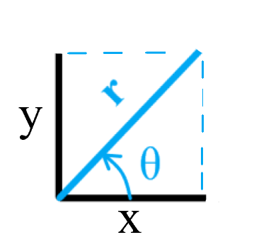

|
This is identical as from cartesian to cylindrical coordinate systems because
the Z-axis component remains the same. I first came across this question looking
only at the polar coordinate system without the z-axis, so that’s why I kept the
title as it is.
In general here is what we are going to do: we are going to take the Del operator
in (x, y) c.s., apply to it the known relations between polar and cartesian c.s.
and after some algebra we are going to come up to something like this:
∇ = […some expression…] ∂/∂r+ […some expression…] ∂/∂θ
Then, for simplicity, we are going to give these expressions some letters to make
it look nice. In physics those letters are \( \hat\rho\) and \( \hat\phi\), but in
engineering (in FluidDynamics in particular) these letters are reserved for density
and potential functions.
So here I will stick with \( \hat r \) and \( \hat\theta \).
The goal is to go from here:
$$ \nabla = \hat i \frac{\partial}{\partial x} + \hat j \frac{\partial}{\partial y}$$
To it’s equivalent in polar coordinates:
$$ \nabla = \hat r \frac{\partial}{\partial r} + \hat \theta \frac{1}{r}\frac{\partial}{\partial \theta}$$
Note that if this were to be a cylindrical c.s. there would be z-axis components
which don’t change.
$$ \biggl(\hat k\frac{\partial}{\partial z} = \hat z \frac{\partial}{\partial z} \biggr)$$

These components can be defined as:
$$r=\sqrt{x^2+y^2}=(x^2+y^2)^{1∕2}$$
$$tan{\theta}=\frac{y}{x}, \ \ \ \ \ cosθ=\frac{x}{r}, \ \ \ \ \ sinθ=\frac{y}{r}$$
Let us convert one component at the time, starting with the x-axis. Remember, to go from
the old axis to the new axis, we need to “look” at each of the old axes from the perspective
of each of the new ones. Hence, the for each old-axis term there are two partial derivatives
(we are in x-y plane. If this were x-y-z, there would have been three partial derivatives)
$$\hat i \frac{∂}{∂x} =\hat i \frac{∂}{∂r} \frac{∂r}{∂x} + \hat i \frac{∂}{∂θ} \frac{∂θ}{∂x}$$
$$\hat i \frac{∂}{∂r} \frac{∂r}{∂x} = \hat i \frac{∂}{∂r} \biggl(\frac{∂}{∂x}(x^2+y^2 )^{1∕2}\biggr) =
\hat i \frac{∂}{∂r} \biggl(\frac{1}{2} \frac{2x}{(x^2+y^2)^{1∕2}} \biggr) =
\hat i \frac{∂}{∂r} \biggl(\frac{x}{r}\biggr)= \hat i \frac{∂}{∂r}(cosθ)$$
There are three ways to express θ, I prefer to do it with tangent function.
[Click to show details] Derivative of arctan(y/x) w.r.t. x
We know that the derivative of arctan is the following:
$$
\frac{\partial}{\partial x} arctan(x) = \frac{1}{1+x^2}
$$
Folks at MIT have this PDF available with a complete proof of this
Next, using the substitution rule (or was it chain rule? meh) the derivative is this:
$$
\frac{\partial}{\partial x} arctan(y/x), \ \ \ \ u=y/x \ \ \ \ \ \frac{\partial u}{\partial x}=\frac{-y}{x^2}
$$
$$
\begin{aligned}
\frac{\partial}{\partial u} arctan(u) \frac{\partial u}{\partial x}&= \\
&= \frac{1}{1+u^2} \frac{-y}{x^2} \\
&= \frac{1}{1+y^2/x^2} \frac{-y}{x^2} \\
&= \frac{-y}{x^2(1+y^2/x^2)} \\
&= \frac{-y}{x^2+\frac{x^2y^2}{x^2}} \\
&= \frac{-y}{x^2+y^2}
\end{aligned}
$$
[Click to show details] Derivative of arctan(y/x) w.r.t. y
We know that the derivative of arctan is the following:
$$
\frac{\partial}{\partial y} arctan(y) = \frac{1}{1+y^2}
$$
Folks at MIT have this PDF available with a complete proof of this
Next, using the substitution rule (or chain rule, or is it vacuum mechanics? meh) the derivative is this:
$$
\frac{\partial}{\partial y} arctan(y/x), \ \ \ \ u=y/x \ \ \ \ \ \frac{\partial u}{\partial y}=\frac{1}{x}
$$
$$
\begin{aligned}
\frac{\partial}{\partial u} arctan(u) \frac{\partial u}{\partial y}&= \\
&= \frac{1}{1+u^2} \frac{1}{x} \\
&= \frac{1}{1+y^2/x^2} \frac{1}{x} \frac{x}{x} \\
&= \frac{x}{x^2(1+y^2/x^2)} \\
&= \frac{x}{x^2+\frac{x^2y^2}{x^2}} \\
&= \frac{x}{x^2+y^2} \\
&= \frac{1}{r} \frac{x}{r}\\
&= \frac{1}{r} cos\theta
\end{aligned}
$$
Did you see that \(\frac{x}{x}\) there? We can do this because \(\frac{x}{x}=1\).
We've basically multipiled the whole expression by '1', which doesn't change anything,
except makes life a tiny bit easier.
Feedbacks, comments, concernes are welcomed.
|